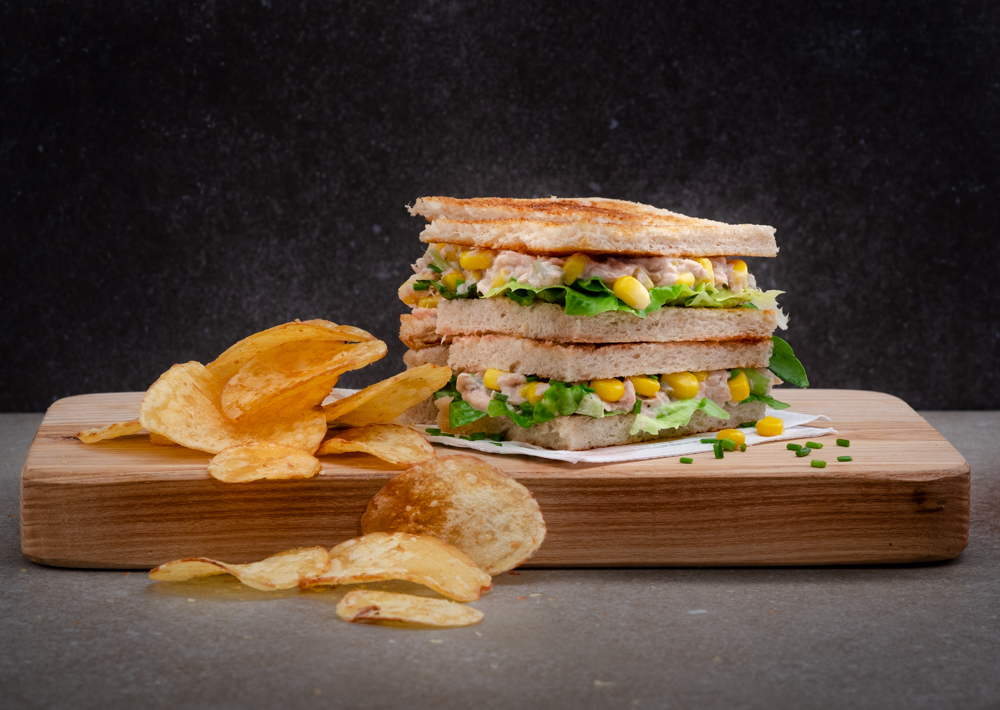

Odin Recipes
Tuna Sandwich Recipe

Description
Tuna and corn: a heavenly combination of cheap yet delicious ingredients. Put them between two slices of bread and you've got the sandwich of a lifetime.
Recipe from What Dad Cooked.
Ingredients
- Can of tuna
- Can of corn
- Chopped celery
- Chopped chives
- Chopped dill pickle
- Crisps
- Lemon
- Lettuce
- Mayonnaise
- Sliced bread
Steps
- Mix the tuna, corn, celery, pickle, and mayonnaise with a fork.
- Add lots of lemon.
- Season with salt and pepper.
- Toast bread.
- Assemble the sandwich.
- Serve with chips.